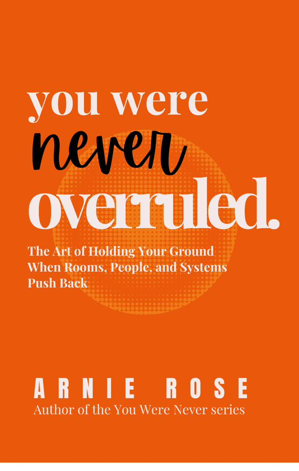

You have been ready for longer than you think. What you have been waiting for is someone to tell you that you are. That moment is not coming. The longer you wait for it, the more you start to mistake the waiting for something else. For preparation. For humility. For patience. It is none of those things. It is a habit of needing permission that you built so gradually you forgot it was a choice.
This is not about confidence. Confident people wait for permission too. It is about something more specific. The belief that your readiness only becomes real when someone outside of you confirms it. That belief is the problem. Not your preparation. Not your timing. The belief itself.
Why People Wait for Permission Before Taking Action
Most people did not decide to start waiting for permission. It was trained into them through specific, repeated experiences. You spoke up and got corrected in a way that felt like punishment. You moved before the signal and someone pulled you back hard enough that you remembered it for years. You tried something without being asked and the response made you feel like overstepping was worse than standing still.
So you learned. You got very good at reading the room before you moved. You got skilled at waiting for the nod, the title, the green light. The moment when the people who mattered signaled that you were cleared to proceed. And for a while it worked. It kept things smooth. It kept you safe from the specific kind of embarrassment that comes from moving too soon in front of the wrong people.
But here is what also happened. You started applying that same filter everywhere. To decisions that did not require anyone's approval. To moves that were entirely yours to make. To rooms where no one was actually watching and no one was going to correct you. The habit outlasted every situation that created it. You are still waiting for clearance from people who are not even in the room anymore.
"The signal you are waiting for was never going to come from outside. It was always going to have to come from you. That is not inspiration. That is just how it works."
Why Being Ready Is Different From Waiting for Permission
These two things feel identical from the inside, which is why they get confused for years. Readiness is a state of preparation. Permission is an external verdict on that state. You can be completely ready and still be waiting for permission. You can also have full permission and still not feel ready. They are entirely separate things that have nothing to do with each other.
The people who move are not the ones who feel ready. They are the ones who stopped requiring permission before they acted on their readiness. That is the only real difference between them and you right now. Not skill. Not timing. Not some special access to certainty that you do not have. Just the decision to stop waiting for a verdict that was never going to come from anywhere useful.
Think about the last time you watched someone do the thing you had been planning to do when you were ready. The automatic reaction was probably some version of: they were more confident, or they had more support, or they had something you do not. That story protects you from a harder truth. They moved without the same signal you have been waiting for. That is all that happened.
What nobody says out loud
Waiting for the right moment is not wisdom. It is what you tell yourself when the real issue is that you are afraid of moving without approval and you need a more respectable reason to stay still. The right moment is almost never an actual moment. It is a feeling of permission wearing a calendar. You keep checking the date when what you are actually checking is whether anyone has noticed you are ready yet.
What it actually costs you
Every month you wait for permission is a month someone else is doing the thing you planned to do when you were ready. Not because they are more qualified. Not because they have better ideas or fewer doubts. Because they decided that moving imperfectly was better than waiting perfectly. That is the only advantage they have over you right now. Not talent, not timing, not access. Just the decision to stop waiting.
The cost is not only the time. It is what the waiting does to how you see yourself. Every time you hold back and wait for clearance, you send yourself a message. The message is: my judgment about my own readiness cannot be trusted. Repeat that message enough times and it becomes a fact you live inside. You stop trusting your own read on situations because you have practiced deferring it for so long that deference feels like accuracy. Real confidence is built from this exact pattern reversing, not from a sudden feeling of certainty arriving from somewhere else.
This is why so many capable people feel stuck. Not because they lack preparation but because they have been training themselves out of their own authority for years. As explored in your life is not a competition, measuring your position against someone else's timeline is not measurement. It is punishment. Measuring your readiness against someone else's clearance to move is the same trap wearing a different name.
Think about the last thing you were ready to do but did not start. Who were you waiting for? What would they have had to say for you to feel cleared to move? And is that person actually someone whose verdict on your readiness should carry that much weight?
Signs You Are Seeking Validation Instead of Trusting Yourself
- 01You have the idea in the meeting but you run a quick calculation about whether you have enough standing to say it today. By the time you finish calculating, someone else has said it or the moment has passed entirely.
- 02You are qualified for the role but you do not apply because you do not meet one hundred percent of the listed requirements. You read that gap as a signal that you are not ready yet, when most applicants who get the job also do not fully meet every requirement listed.
- 03You want to start the project but you keep researching instead of building. More preparation feels like the responsible version of moving forward. It is not. It is waiting with better optics.
- 04You know exactly what you think but you phrase it as a question in rooms where your confidence has not been formally validated. Questions feel safer than statements. You have been asking questions for so long you have forgotten what it feels like to just say the thing.
- 05You are ready to have the difficult conversation but you wait for the other person to bring it up first so you are responding rather than initiating. Responding feels like less exposure. You have been waiting for them to give you permission to address something you both already know needs to be addressed.
- 06You have been performing at the level above your title for months but you have not asked for the promotion because you are waiting for someone to notice and offer it without you having to name what you have already earned.
Every one of these is permission-waiting wearing a specific, respectable costume. None of them feel like fear from the inside. All of them are.
What giving yourself permission actually looks like
It does not feel like a surge of confidence. It does not arrive with certainty attached. It feels more like a quiet decision made in the absence of the signal you were waiting for. It sounds like: the signal is not coming, so I am moving anyway. That is it. No fanfare. No sudden feeling of readiness. Just the decision to treat your own judgment as sufficient evidence that you can proceed.
It looks like sending the message before you feel completely ready to send it. It looks like raising your hand in the meeting without waiting to be called on. It looks like starting with the tools you already have instead of waiting until the conditions are cleaner or the timing is better or someone tells you it is finally time. You do not need to shrink to be accepted in order to finally be cleared. The clearance you have been waiting for was never going to be handed out for good behavior.
The people you admire for their decisiveness are not people who stopped feeling uncertain. They are people who stopped treating uncertainty as a mandatory waiting period. And it does not have to start big. You make the smallest move that proves to yourself that you can move without the signal. That proof is what the next move gets built on.
"Nobody handed the people you admire a signal either. They just stopped waiting for one and started treating their own judgment as the clearance they needed."
The compound effect of moving without waiting
The first time you move without waiting for permission, it is uncomfortable. The second time is slightly less so. By the tenth time, you are not even running the calculation anymore. You have built enough evidence that your judgment can be trusted and the permission-seeking habit starts to lose its grip on your decisions.
This is the same quiet accumulation described in growth is not always visible. The work that changes you most is usually the work that is hardest to see while it is happening. Each time you give yourself permission and move, the change feels small. Over months the accumulation is not small at all. You look back and realize you stopped asking for clearance somewhere in the middle of doing the thing.
You are not going to feel ready before you start. You are going to feel ready because you started. That is the actual sequence of how readiness is built. It follows action. It does not precede it. You have been waiting for it in the wrong place, at the wrong point in the process, from the wrong source.
How to Trust Yourself Without External Validation
Self-trust gets built the same way any trust gets built: through a track record, not through a decision. You don't talk yourself into trusting someone. You watch what they do over time and draw a conclusion from the pattern. The same applies to trusting yourself, except the evidence you need is evidence you generate, one kept commitment at a time.
This means the fastest path to self-trust is not a mindset shift. It's a small, repeatable action you can point to afterward and say: I said I would, and I did. Each one of those is a data point. Enough of them and the conclusion becomes obvious without needing anyone else to confirm it. The size of the action barely matters. What matters is that it actually happened the way you said it would, because the evidence is built from completion, not from ambition.
External validation feels faster because it arrives all at once, in a single moment of approval. Self-trust is slower because it has to be earned in increments. But external validation only ever covers the specific thing it was given for. Approval to take this one action does not transfer to the next decision you have to make alone. Self-trust, once it's actually built, travels with you into situations nobody has approved yet, which is the entire point.
This is also why self-trust holds up better under pressure. Validation can be withdrawn, withheld, or simply unavailable when you need it most. A track record you built yourself doesn't depend on anyone else being in the room. It's already yours, regardless of who is or isn't paying attention.
How to Stop Waiting for Permission From Other People
There is one thing you have been not doing because you have been waiting for someone to tell you that you can. You already know what it is. You thought of it before you finished reading that sentence. You have probably been carrying it for weeks or months, adding preparation to it, making it more ready for a launch that keeps getting deferred because the signal never comes.
Do the smallest possible version of that thing today. Not the full plan. Not the polished version. The smallest action that proves to yourself that you are someone who moves without waiting for clearance. Send the email. Write the first paragraph. Make the call. Say the thing in the next conversation where it belongs, without the pre-apology and without waiting to be invited.
The permission was always yours to give. You kept waiting for it to come from somewhere else because that felt safer than trusting yourself enough to move without it. That option has been available to you the whole time. It still is. And the version of you that stops waiting is not a braver version. It is a version that finally understood where the signal was always supposed to come from.
What is the one thing you have been qualified to do for longer than you have been doing it, and what, honestly, have you been waiting for?

You Were Never Overruled is about the moments when your decisions kept getting dismissed, your boundaries kept getting crossed, and your voice kept getting talked over. It is about what happens when you stop waiting for the room to give you permission and start taking up the space that was always yours.
Read You Were Never Overruled on Amazon